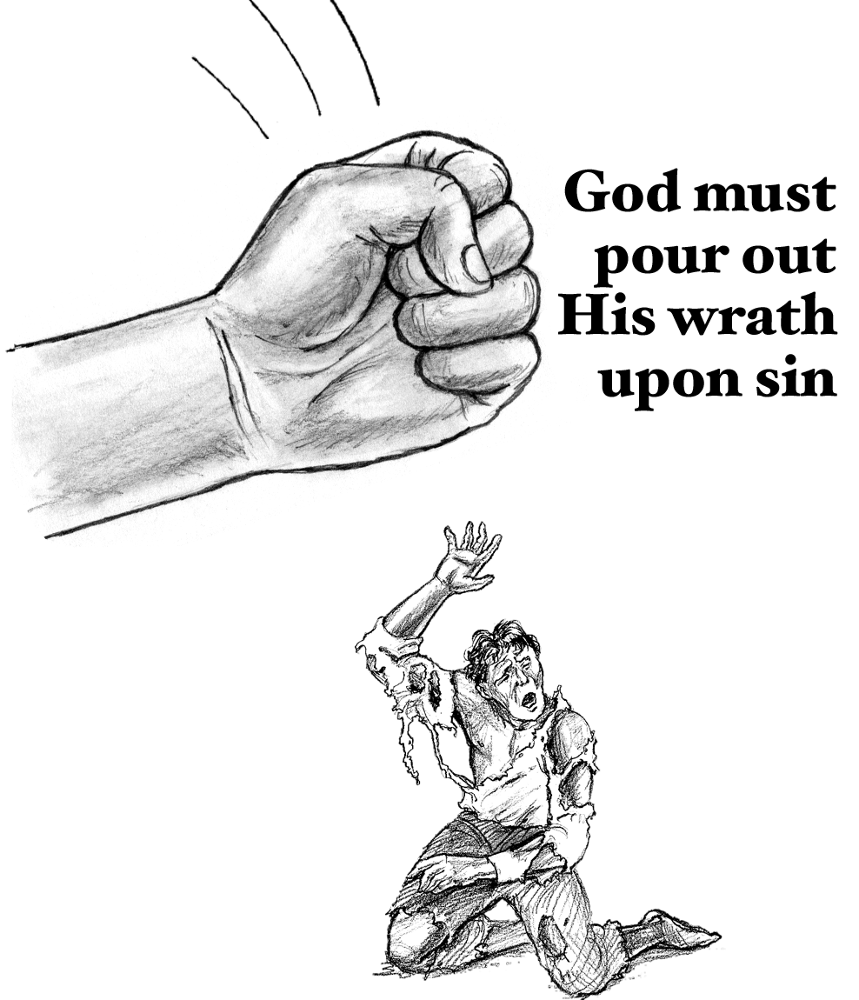
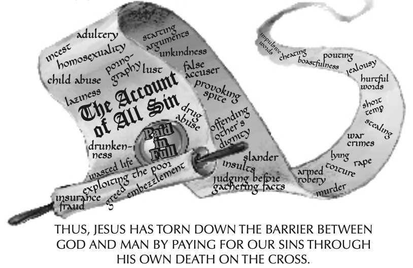
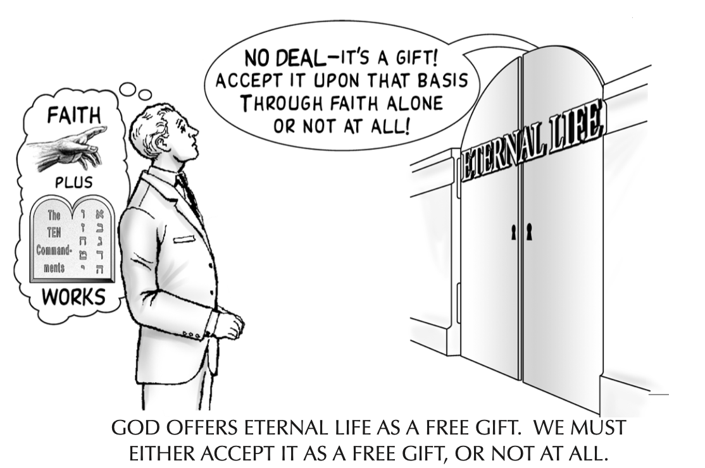

Has anyone ever shown you from the Bible how you can know for certain that you will go to heaven when you die?
The word “Gospel” means “good news.” It is the good news of how you can have a loving, personal relationship with God that gives meaning and purpose to this life, and, at the same time, gives you the certainty that you will spend eternity with Him in heaven. Many people today claim that they are preaching the Gospel, yet they all seem to have different messages.
Why do we hear so many different messages today? Is there more than one gospel? What really is “The Gospel” according to the Bible?
sin
To understand the good news of how the relationship between God and man must be restored, one must first
understand how that relationship fell into ruin.
The Word of God teaches us:
For all have sinned, and come short of the glory of God.
We were dead in sins . . . .
God is holy (spiritually clean) and man is sinful (spiritually unclean). Just as a person who was physically clean could not tolerate being next to a dead, decaying, stinking ani- mal, so a perfect and holy God cannot allow a sinful and imperfect man into His presence. Man is dead in his sins.
separation from god
The result of sin is clear:
Your sins have made a barrier between you and your God.
God is both holy (spiritually clean) and infinite. Therefore, He is infinitely holy! Consequently, even the smallest sin is infinitely offensive to Him. Thus, the Bible teaches that even the smallest sin is enough to eternally separate man from God. God cannot allow sin in His presence.
man’s efforts are useless!
Man has always sought a way to cross the barrier that separates him from God. He has tried to break through it by baptism, good works, loving your neighbor, sacraments, joining some particular church or denomination, etc. But the Bible teaches that no work of sinful man can ever tear down the barrier of sin that separates Holy God from sinful man.
The Bible says:
But we are like an unclean thing, and all our righteousness are as filthy rags.
To attempt to wash away your sins through your own works is as hopeless as trying to wash a dirty face using a dirty greasy rag! There is absolutely nothing that man can do to erase his sins and cross the barrier that separates him from God. (Also see Haggai 2:12-14; Luke 18:10-14; Romans 3:20; 3:27-38; 4:5; Galatians 3:10-11, 21)
the gospel
The word “Gospel” means “Good News.” Since we can never come into God’s presence in our sins, God sent Jesus to die for our sins, and then raised Him from the dead on the third day.
Moreover brethren, I declare unto you the gospel . . . that Christ died for our sins according to the Scriptures, and that He was buried, and that he rose again on the third day according to the Scriptures.
Many people truly believe that Jesus died and rose again from the dead, but what does the Bible mean when it says that Jesus died “for our sins?” How did his death tear down the barrier between God and man?
the problem:
god must punish those who bear the guilt of sin
The Bible tells us that since God is holy and just, He must punish those who bear the guilt of sin.
Let no man deceive you with vain words, for because of these things comes the wrath of God upon the children of disobedience.
For the wrath of God is revealed from heaven against all ungodliness and unrighteosness of man.
God’s justice requires that those who bear the guilt of sin must suffer God’s just punishment. (2 Thessalonians 1:8-9; Matthew 25:46;Revelation20:10.) How Christ freed us from God’s wrath through His own death can be explained in three steps.
step 1: imputation
Christ took our sins upon himself
The first step in the redemption of mankind was for Jesus Christ to bear the sins of the world in His body on the cross. When Jesus hung on the cross, God took all the sins of the world (past, present and future) and placed (“imputed”) them onto Christ.
And the Lord has laid on Him [Jesus] the iniquity [sin] of us all.
Who His own self bore our sins in His body on the tree.
For He [God the Father] made Him Who knew no sin [Jesus] to be sin on our behalf, that we might become the righteousness of God in Him.
Since God must punish those who bear the guilt of sin, who would God now have to punish?
step 2: substitution
Christ died in our place
Since God must punish those who bear the guilt of sin, He poured out His wrath upon Jesus in our place. Jesus became our “substitute.” He was punished for our sins, and died in our place.
But He was wounded for our transgressions, He was bruised for our iniquities. The chastisement for our peace was upon Him.
And about the ninth hour, Jesus cried out with a loud voice, saying . . . “My God, My God, why have you forsaken me?”
step 3: satisfaction(propitiation)
Christ’s death paid in full for our sins, thereby satisfying God’s anger and justice
Since Jesus died in our place for our sins, God’s justice was satis- fied. Jesus paid for all man’s sins, so any man who chooses to accept that payment will never have to experience the eternal wrath of God which must come upon all man’s sins.
Yet it pleased the Lord to bruise Him; He has put Him to grief. When thou [God the Father] shall make His [Jesus’] soul an offering for sin . . . He shall see the travail of His soul, and shall be satisfied.
When Jesus therefore received the vinegar, He said, “It is finished,” and He bowed his head and gave up His Spirit.
The phrase “It is finished” was actually an expression used in Rome in the time of Christ when a debt had been paid in full (Kit- tel, vol. VIII, pp. 57-60). When Jesus shouted this just before He died, He was indicating that He had made a perfect, complete and final payment for sin. (Also see Colossians 2:13-14).
Jesus is God
Jesus is God! He is eternally equal in every way with the Father! He simply became man so He could die for our sins, but He never stopped being God!
And Thomas answered and said to Him: “My Lord and my God.” Jesus said to him: “Because you have seen Me you have believed. Blessed are they who have not seen Me and yet have believed.”
(Also see John 1:1, John 8:58-59 (c.f. Exodus 3:13-14); John 10:30; 1 Timothy 3:16; Titus 2:13; Colossians 2:2, 2:9; Hebrews 1:8).
Those who deny the divinity of Jesus will receive eternal condemnation. Jesus said:
You are from beneath; I am from above. You are of this world, I am not of this world. I said therefore unto you that you shall die in your sins, for if you believe not that I am He, you shall die in your sins.
(Also see John 11:25-27, 20:31; Acts 9:20; 16:30-31; 1st John 5:13)
Why did God become man?
Earlier we learned that because God is infinitely Holy, even the smallest sin is infinitely offensive to Him. As a result, an infinite payment must be made for the sins of each and every person. Now there are two ways by which an infinite payment can be offered: a finite person could suffer God’s wrath for an infinite period of time, or an infinite person could suffer God’s wrath for a finite period of time. Both yield an infinite payment for sin.
- Man, who is finite, would therefore have to suffer God’s wrath for infinity if he were to pay for his own sins. That is why hell is eternal.
- Jesus Christ, the infinite God in human form, would have to suffer God’s wrath for a finite amount of time. Since He is God, the suffering He endured on the cross was a sacrifice of infinite value. Therefore, His death made available the infinite payment necessary to pay for the sins of all men throughout all ages.
An infinite payment must be made for every man’s sins. God allows each person to decide which payment plan he prefers . . . Jesus Christ or eternity in hell.
faith: man’s response to Christ
Jesus did all the work necessary to save man from his sins. However, before we can experience the benefits that God has provided through Christ’s death on the cross, God requires that we believe (trust) in Jesus, and what He has accomplished through His death.
Knowing that a man is not justified by the works of the law, but by faith in Jesus Christ, even we have believed on Christ Jesus that we might be justified by faith in Christ, and not by the works of the law; for by the works of the law shall no flesh be justified.
For God so loved the world that He gave His only begotten Son, that whosoever believes on Him will not perish, but have everlasting life.
(In fact, there are over 160 verses in the New Testament which declare that the only condition for receiving eternal life is faith in Jesus Christ. Among them are John 1:7, 1:12, 3:18, 5:24, 6:29, etc.)
For since, in the wisdom of God, the world through wisdom did not know God, it pleased God through the foolishness of the message preached to save those who believe.
grace: a free gift
The word “grace” means something which is given freely . . . without cost or obligation. For example, if your best friend of- fered you a gift and you tried to pay him for it, could you still call it a gift? Of course not. It becomes a debt which he owes you the moment he accepts your money! Your friend would probably be insulted, withdraw the gift and say: “I’m not giving this to you because I have to. It is a gift. Do you accept my gift or not?”
Now to him who works, his wages are not counted as grace, but as a debt.
Only when you had put your money back in your pocket and stretched forth your empty hand would he renew his offer and extend the gift to you.
The same is true with God’s offer of eternal life. People try to purchase eternal life by obeying the Ten Commandments, living a good life, going to church, or some other religious work. But God will not make Himself a debtor to any man! He does not “owe” eternal life to anyone. He will offer it only as a gift!
grace: it must be free
When man attempts to gain eternal life through his own works, he is no longer accepting God’s offer of eternal life as a free gift, that is, by “Grace.”
But if it is on the basis of works, then it is no longer grace.
Yet it is only by His “grace” that God will save us!
For by grace are you saved through Faith, and that not of yourselves, it is the gift of God, not of works that anyone should boast.
Therefore, Scripture teaches that God withdraws the offer of eternal life from anyone who tries to earn it through their works, thus degrading God by seeking to make Him a debtor to sinful man.
For you have become estranged from Christ, you who attempt to be justified by the law; you have fallen from grace.
Therefore, to attempt to gain eternal life through the works of the law is to reject the only way in which God offers eternal life, that is, by His grace. And when a man rejects God’s gracious offer of eternal life, he is freely choosing to face eternal condemnation.
repentance
probably the most misunderstood word in the english language
what saving repentance is not:
- Saving repentance is not being sorry for your sins.
- Saving repentance is not turning from your sins or reforming your life.
- Saving repentance is not the willingness to turn your life over to God so that He can direct your path.
Saving repentance has absolutely nothing to do with regretting your sins or resolving to turn from
them. God is willing to save you just the way you are.
The Bible says:
While we were yet sinners, Christ died for us.
what saving repentance is:
Saving repentance is to stop trusting in gaining eternal life through religion, religious rituals, or obedience to God’s laws.
The word “repent” comes from the Greek word which means “to change one’s mind.” Those who believe that eternal life can be earned through good works are commanded in Scripture to change their mind or “repent.” They are told to stop trusting in their works, and come to God on the basis of grace through faith alone.
In Matthew 3:7-9 some religious men believed that they were going to heaven because they were descendents of Abraham, the father of the Jewish people. God Himself had chosen the Jewish people and established their religion. These men believed that because they were the right religion that they would go to heaven. John the Baptist told them that they must repent. That is, they must stop trusting in their religion to get them to heaven.
Luke 13:1-5 tells of a tower in Jerusalem that collapsed and killed 18 people. The Jewish mind searched for an answer for this tragedy. They realized that only God can know the secret thoughts and deeds of another man. Perhaps then, they reasoned, those 18 persons on whom the tower of Siloam fell were actually the 18 worst sinners in all Jerusalem. God could have gathered them together at the appointed time and place to execute his righteous judgment. This however would mean that only the very worst sinners are worthy of God’s judgment. The rest of Jerusalem (those who had not been killed by the falling tower) had apparently led good enough lives that they were not under God’s judgment. To believe this sort of reasoning, however, is to believe that salvation is earned by the works of the law. Jesus warned those who believed this way that they were facing eternal condemnation. He commanded them to repent - to abandon all hope of securing a right standing before God by the works of the law, and trust in God alone for their salvation.
In Hebrews 9:9-14 the Bible calls sacraments or religious rituals through which men try to reach God “dead works.” A few chapters earlier, the same author tells us in Hebrews 6:1 that the “foundation” of the Christian faith is “repentance from dead works and faith towards God.” That is to say, one must stop trusting in “dead works” (i.e. religious rituals, sacraments, etc.) before he can exercise a genuine saving faith in God.
The Biblical command is clear. If a man believes that his religion will get him into heaven, he must repent, (Matthew 3:7-9). If he believes that obeying the laws of God are necessary to get him into heaven, he must repent (Luke 13:1-5). And if he believes that he must perform some religious ritual or sacrament to be saved, he must repent, and stop trusting in any of those things to save him (Hebrews 6:1). Like the person on page 14, he must put his “money” back in his pocket and accept eternal life as a free gift!
Saving faith does not simply affirm that Jesus’ death is “necessary,” it must affirm that His death is enough! That it is sufficient all by itself to pay for your sins apart from any human effort or good work, and that it is a free gift available only through faith, and apart from any human effort or good work. (See Galatians 2:21, 3:10-14, 5:1-4; Romans 4:4-5, 4:14).
Go back to the three helpful questions. What was your answer to “why God should let you into heaven?” If you said you must be baptized, live a good life, or anything else other than simply trusting in Jesus, you must repent. You must stop trusting in any religious things you have done in the past or might do in the future, and trust on Christ alone.
to summarize then:
Since sin separates man from God, and since Jesus paid for our sins at the cross, man can have a relationship with God only through Jesus Christ.
Jesus said unto him: “I am the way and the truth and the life. No one comes to the Father except through Me.”
| Have you ever believed that living up to some standard of goodness or performing some religious ordinance was necessary to go to heaven? |
Do you understand what Jesus did at the cross for you?
Could you explain it in your own words right now? |
| Are you still trusting in those things to save you? | Has anyone ever explained it to you in this way before? |
assurance
If you have placed your faith in Christ alone, and you were to die tonight, do you know for certain that
you would go to heaven?
Jesus said:
Most assuredly I say unto you: He that hears My Word and believes on Him that sent Me has everlasting life, and shall not come into condemnation, but has passed from death into life.
| Most assuredly I say unto you: | How certain of this was Jesus? |
| He that hears My Word... | Have you heard the words of Christ in the pages of this booklet? |
| and believes on Him that sent Me... | Do you believe that God sent Jesus to die in your place? |
| has everlasting life... | Does this say that you will receive it later, or that you already have it? |
| and shall not come into condemnation... | Does the Bible say “might not” or “shall not?” |
| but has passed from death into life. | At what moment does one pass from death into life? |
eternally secure
If you fall into sin tomorrow or next month, is it possible for you to lose your gift of eternal life?
The Bible says:
We are sanctified through the offering of the body of Jesus Christ once for all. And every priest stands daily ministering and offering repeatedly the same sacrifices, which can never take away sins. But this man, after He had offered one sacrifice for sins for ever [past, present and future] sat down at the right hand of God . . . For by one offering has He perfected forever those who are being sanctified.
eternal security: a necessary conclusion of our lord’s death
One does not lose the gift of eternal life because of sin. That’s the very reason that Christ died . . . to pay for your sins! It is because He died for all sins forever — past, present and future — that He is able once and for all to declare you not guilty . . . not only of our past sins, but of all your sins: past, present and future! To refuse to believe this is to refuse to believe the very gospel itself! (Review pages 7-11).
eternal security: a necessary conclusion of grace
shall we continue to sin then?
Although no sin can ever deprive a believer of the eternal life that was freely bestowed upon him once and for all, sin nevertheless has grave consequences both in this life and in the life to come.
firstly, there are natural consequences of sin
A person who drinks to excess may kill himself or an innocent victim in an automobile accident. One who engages in immoral sexual activity may contract an STD. Knowing Christ as Savior will save one from hell, but it will not save one from the natural consequences of sinful or foolish living. (See Galatians 6:7-8; James 2:14-17).
secondly, there are eternal consequences for sin
Receiving a free ticket to a sports event guarantees one entrance into the stadium, but it does not guarantee one a front row seat. Similarly, receiving the free gift of eternal life through faith in Jesus Christ guarantees a person entrance into God’s eternal kingdom, but in no way guarantees one an exalted position in that kingdom! Our position in heaven and the rewards associated with that position are totally dependent upon the holy life and godly works which we manifest in this lifetime.
While the pleasures of sin in this life may at times appear more important than some distant hope of future rewards in heaven, Scripture teaches that those who barter away their “inheritance” (their future rewards in heaven) for the pleasures of sin will one day weep uncontrollably when they see the unspeakable rewards which they forfeited when they pursued their own sinful pleasures in this lifetime.
get rooted in your faith
In the coming days Satan will begin an assault on you in an attempt to undermine your faith in Christ. (1 Peter 5:8; Ephesians 6:16; Matthew 13:3-23).
Some of his specific goals are:
- To plant seeds of doubt and despair in order to rob you of the joy and assurance of your eternal life.
- To lead you astray in order to keep you from growing in the knowledge of the truth, and
- To keep you from sharing your faith in Christ with others.
Here are some tips on how to stand firm against his attack.
-
Since the gospel is the corneerstone of the Christian faith, Satan will immediately begin his attack by trying to confuse you about the truth of the gospel. To withstand the assault you are about to face, you must become firmly rooted in the truth of the gospel. To do this, determine right now that you will read this booklet once a day for an entire month. Don’t stop after ten or fifteen days even if you have memorized it! And above all, don’t let Satan discourage you by telling you that you “don’t have time,” or that you have “more important things to do.” This is a classic lie of Satan. Don’t believe it. (Matthew 13:1-9, 18-23, 8:21-22; Luke 10:38-42, 12:16-31, 14:16-20; Ephesians 5:16).
-
Don’t try to gain assurance of your relationship with Christ or grow in spiritual truth through “mystical feelings” or “quite little voices” inside your head. What we “feel” in our heart is no more reliable a guide to spiritual truth than it is to truths concerning mathematics or geography. Would you try to drive hundreds of miles of back country roads in the fog without a roadmap simply by trusting your “feelings?” Of course not! And yet this is how many people foolishly try to live their Christian lives!
-
In order for us to grow in spiritual truth, God has given us a source of truth that is sure and steadfast. It is called the Bible. Try to read your Bible every day. Start by reading the Book of Galatians. It is St. Paul’s defense of the gospel and the doctrine of grace. Read one chapter each day until you have read the entire book (six chapters) five times. This will take one month. In the next month, read through the entire book once a day. This will firmly establish you in some of the most basic and important doctrines of the Christian faith, providing the kind of foundation that is essential for sound Christian growth.
-
Once you have become rooted in your understanding of the gospel, find a good church. To do this, ask the pastor how one gets to heaven. If he says it is through living a good life, obeying the Ten Commandments, baptism, confession, church membership, or some other incorrect answer—turn around and look for another church. If the pastor doesn’t even know the gospel, the most basic belief of the Christian faith, then he doesn’t even know the first thing about Christianity! Why would you want to go to a church where the pastor doesn’t even know how to get to heaven? Find a good church!
thank God daily
According to the Bible, many wonderful things happened to you the moment you understood the gospel and trusted in Christ alone as your Savior.
- You received a pardon for all your past, present and future sins.
- You received eternal life as a free gift.
- You are assured of going to heaven.
- You became a child of God.
- You have a friend who understands what you are going through, and is there to help you in time of need.
In Luke 17:11-19, Jesus cleansed ten lepers, and nine of them went their merry way without so much as stopping to thank Him! So that you don’t follow the example of the nine ungrateful lepers, you can show your thanks to God for what He has done for you by living your life in a manner that is pleasing to Him, obeying His commandments and walking according to His Word.
share the gospel
Imagine that one day you are walking down a sidewalk, and a piano that was being hoisted into a tenth story apartment breaks loose, and is falling toward you without your knowledge. All of a sudden, someone you have never met runs over to you and pushes you out of the way to save you, only to be crushed himself by the falling piano. As he lies dying, his trembling hand takes a letter from his pocket, and he asks you to take it and deliver it for him. Would you? Of course you would!
Jesus, who died to save you, has left such a letter with you. That letter is called The Gospel. “And He said to them, ‘Go into all the world and preach the gospel to every creature,’” Mark 16:15. (Also see Matthew 28:18-20, Acts 1:8, Romans 10:14-15). Are you willing to take the letter that Jesus has left with you and try to do as He has asked?
If you are, simply ask a friend or an acquaintance: “Has anyone ever shown you from the Bible how you can know for certain that you will go to heaven when you die?” If they say “no,” simply ask “May I?” Most people will be eager to find out how they can know this for sure. If they are interested, simply sit down and take time to share this little booklet with them. They will be eternally grateful!
about the gospel booklet
Today a variety of “gospel” messages flood the air waves and pul- pits across the globe. They range from sentimental overtures encouraging the lost sinner to “invite Jesus into his heart,” to threatening admonitions requiring the unbeliever to “repent of his sins.” Not surprisingly, believer and unbeliever alike have been left in a state of total confusion. Even when the gospel is proclaimed clearly and accurately, the hearer will often filter the words of the evangelist through a preexisting grid of false gospels which he has already heard, so failing to understand the saving message of Jesus Christ. With this in mind, The Gospel Booklet was written not only to explain and illustrate those concepts essential to saving faith such as our Lord’s atoning death and the doctrine of grace, but to address and correct much of the false teaching that is so often associated with the Christian gospel. Clarifying so many complex theological issues in this short, easy-to-read booklet took close to five years of writing and editing. We know of no booklet in print today that presents the gospel more clearly or accurately.
It is our desire to see The Gospel Booklet achieve the widest possible circulation. Through the efforts of numerous churches and mission organizations, The Gospel Booklet has already been translated into some of the world’s major languages. Christian organizations in foreign countries are typically granted written permission to translate or print The Gospel Booklet from their own facilities in the native tongue. If you would like to see it made available in a country or a language where it is not currently available, we invite you to contact us. Let’s work together to make The Gospel Booklet available to all people in all languages.
about the author
Ron Shea attended Villanova University on a four year scholarship from the United States Navy. After earning a bachelor of electrical engineering, he served four years as a naval officer. Following his military service, he matriculatede at Dallas Theological Seminary where he majored in New Testament Literature and Exegesis, translating the entire New Testament from the original Greek language. He graduated with honors from the four-year Master of Theology program. He went on to earn a Doctor of Jurisprudence from the University of California, Hastings College of Law, where he earned awards in Admiralty, Jurisprudence, and Oral Argument. He has pastored churches in New Orleans and San Francisco, and is the founder and president of Clear Gospel Campaign.